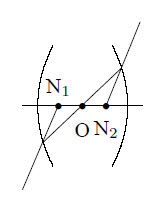
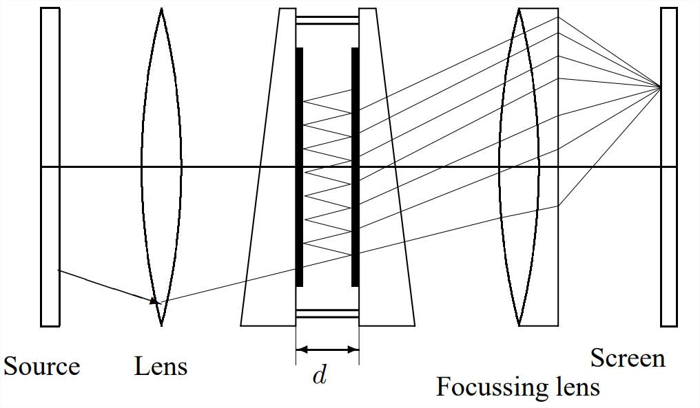

For the refraction at a surface : \(n_i\sin(\theta_i)=n_t\sin(\theta_t)\) holds where \(n\) is the refractive index of the material. Snell’s law is:
\[\frac{n_2}{n_1}=\frac{\lambda_1}{\lambda_2}=\frac{v_1}{v_2}\]
If \(\Delta n\leq1\), the change in phase of the light is \(\Delta\varphi=0\), if \(\Delta n>1\) then: \(\Delta\varphi=\pi\). The refraction of light in a material is caused by scattering from atoms. This is described by:
\[n^2=1+\frac{n_{\rm e}e^2}{\varepsilon_0m}\sum_j\frac{f_j}{\omega_{0,j}^2-\omega^2-i\delta\omega}\]
where \(n_{\rm e}\) is the electron density and \(f_j\) the oscillator strength, for which \(\sum\limits_j f_j=1\). From this follows that \(v_{\rm g}=c/(1+(n_{\rm e}e^2/2\varepsilon_0m\omega^2))\). From this the equation of Cauchy one can derive: \(n=a_0+a_1/\lambda^2\). More generally, it is possible to expand \(n\) as: \(\displaystyle n=\sum_{k=0}^n\frac{a_k}{\lambda^{2k}}\).
For an electromagnetic wave in general: \(n=\sqrt{\varepsilon_{\rm r}\mu_{\rm r}}\).
The path, followed by a light ray in material can be found from Fermat’s principle:
\[\delta\int\limits_1^2 dt=\delta\int\limits_1^2\frac{n(s)}{c}ds=0\Rightarrow \delta\int\limits_1^2 n(s)ds=0\]
The Gaussian lens formula can be deduced from Fermat’s principle with the approximations \(\cos\varphi=1\) and \(\sin\varphi=\varphi\). For the refraction at a spherical surface with radius \(R\):
\[\frac{n_1}{v}-\frac{n_2}{b}=\frac{n_1-n_2}{R}\]
where \(|v|\) is the distance of the object and \(|b|\) the distance of the image. Applying this twice results in:
\[\frac{1}{f}=(n_{\rm l}-1)\left(\frac{1}{R_2}-\frac{1}{R_1}\right)\]
where \(n_{\rm l}\) is the refractive index of the lens, \(f\) is the focal length and \(R_1\) and \(R_2\) are the curvature radii of both surfaces. For a double concave lens \(R_1<0\), \(R_2>0\), for a double convex lens \(R_1>0\) and \(R_2<0\). Further:
\[\frac{1}{f}=\frac{1}{v}-\frac{1}{b}\]
\(D:=1/f\) is called the dioptric power of a lens. For a lens with thickness \(d\) and diameter \(D\) to a good approximation: \(1/f=8(n-1)d/D^2\). For two lenses placed on a line with distance \(d\) between them:
\[\frac{1}{f}=\frac{1}{f_1}+\frac{1}{f_2}-\frac{d}{f_1f_2}\]
In these equations the following signs are being used for refraction at a spherical surface, as is seen by an incoming light ray:
| Quantity | + | - |
|---|---|---|
| \(R\) | Concave surface | Convex surface |
| \(f\) | Converging lens | Diverging lens |
| \(v\) | Real object | Virtual object |
| \(b\) | Virtual image | Real image |
For images formed by mirrors
\[\frac{1}{f}=\frac{1}{v}+\frac{1}{b}=\frac{2}{R}+\frac{h^2}{2}\left(\frac{1}{R}-\frac{1}{v}\right)^2\]
where \(h\) is the perpendicular distance from the point the light ray hits the mirror to the optical axis. Spherical aberration can be reduced by not using spherical mirrors. A parabolical mirror has no spherical aberration for light rays parallel with the optical axis and is therefore often used for telescopes. The signs used are:
| Quantity | + | - |
|---|---|---|
| \(R\) | Concave mirror | Convex mirror |
| \(f\) | Concave mirror | Convex mirror |
| \(v\) | Real object | Virtual object |
| \(b\) | Real image | Virtual image |
The nodal points N of a lens are defined in the figure below. If the lens is surrounded by the same medium on both sides, the nodal points are the same as the principal points H. The plane \(\perp\) to the optical axis through the principal points is called the principal plane. If the lens is described by a matrix \(m_{ij}\) then for the distances \(h_1\) and \(h_2\) to the boundary of the lens it holds that:
\[h_1=n\frac{m_{11}-1}{m_{12}}~~,~~~h_2=n\frac{m_{22}-1}{m_{12}}\]

The linear magnification is defined by: \(\displaystyle N=-\frac{b}{v}\)
The angular magnification is defined by: \(\displaystyle N_{\alpha}=-\frac{\alpha_{\rm syst}}{\alpha_{\rm none}}\)
where \(\alpha_{\rm sys}\) is the size of the retinal image in the optical system and \(\alpha_{\rm none}\) the size of the retinal image outside the system. Further: \(N\cdot N_{\alpha}=1\). For a telescope: \(N=f_{\rm objective}/f_{\rm ocular}\) holds. The f-number is defined by \(f/D_{\rm objective}\).
A light ray can be described by a vector \((n\alpha,y)\) with \(\alpha\) the angle with the optical axis and \(y\) the distance to the optical axis. The change of a light ray interacting with an optical system can be obtained using matrix multiplication:
\[\left(\begin{array}{c}n_2\alpha_2\\y_2\end{array}\right)=M \left(\begin{array}{c}n_1\alpha_1\\y_1\end{array}\right)\]
where \({\rm Tr}(M)=1\). \(M\) is a product of elementary matrices. These are:
Lenses usually do not give a perfect image. Some causes are:
If an electromagnetic wave hits a transparent medium part of the wave will reflect at the same angle as the incident angle, and a part will be refracted at an angle according to Snell’s law. It makes a difference whether the \(\vec{E}\) field of the wave is \(\perp\) or \(\parallel\) w.r.t. the surface. When the coefficients of reflection \(r\) and transmission \(t\) are defined as:
\[r_\parallel\equiv\left(\frac{E_{0r}}{E_{0i}}\right)_\parallel~,~~ r_\perp\equiv\left(\frac{E_{0r}}{E_{0i}}\right)_\perp~,~~ t_\parallel\equiv\left(\frac{E_{0t}}{E_{0i}}\right)_\parallel~,~~ t_\perp\equiv\left(\frac{E_{0t}}{E_{0i}}\right)_\perp\]
where \(E_{0r}\) is the reflected amplitude and \(E_{0t}\) the transmitted amplitude. Then the Fresnel equations are:
\[r_\parallel=\frac{\tan(\theta_i-\theta_t)}{\tan(\theta_i+\theta_t)}~~~,~~~ r_\perp =\frac{\sin(\theta_t-\theta_i)}{\sin(\theta_t+\theta_i)}\\\]
\[t_\parallel=\frac{2\sin(\theta_t)\cos(\theta_i)}{\sin(\theta_t+\theta_i)\cos(\theta_t-\theta_i)}~~~,~~~ t_\perp =\frac{2\sin(\theta_t)\cos(\theta_i)}{\sin(\theta_t+\theta_i)}\]
and the following holds: \(t_\perp-r_\perp=1\) and \(t_\parallel+r_\parallel=1\). If the coefficient of reflection \(R\) and transmission \(T\) are defined as (with \(\theta_i=\theta_r\)):
\[R\equiv\frac{I_r}{I_i}~~~\mbox{and}~~~T\equiv\frac{I_t\cos(\theta_t)}{I_i\cos(\theta_i)}\]
with \(I=\langle|\vec{S}|\rangle\) it follows that: \(R+T=1\). A special case is \(r_\parallel=0\). This happens if the angle between the reflected and transmitted rays is \(90^\circ\). From Snell’s law it then follows: \(\tan(\theta_i)=n\). This angle is called Brewster’s angle. The situation with \(r_\perp=0\) is not possible.
The polarization is defined as:
\[P=\frac{I_{\rm p}}{I_{\rm p}+I_{\rm u}}=\frac{I_{\rm max}-I_{\rm min}}{I_{\rm max}+I_{\rm min}}\]
where the intensity of the polarized light is given by \(I_{\rm p}\) and the intensity of the unpolarized light is given by \(I_{\rm u}\). \(I_{\rm max}\) and \(I_{\rm min}\) are the maximum and minimum intensities when the light passes a polarizer. If polarized light passes through a polarizer Malus law applies: \(I(\theta)=I(0)\cos^2(\theta)\) where \(\theta\) is the angle of the polarizer.
The state of a light ray can be described by the Stokes-parameters: start with 4 filters where each transmits half the intensity. The first is independent of the polarization, the second and third are linear polarizers with the transmission axes horizontal and at \(+45^\circ\), while the fourth is a circular polarizer which is opaque for \(L\)-states. Then \(S_1=2I_1\), \(S_2=2I_2-2I_1\), \(S_3=2I_3-2I_1\) and \(S_4=2I_4-2I_1\).
The state of a polarized light ray can also be described by the Jones vector:
\[\vec{E}=\left(\begin{array}{c} E_{0x}{\rm e}^{i\varphi_x}\\ E_{0y}{\rm e}^{i\varphi_y} \end{array}\right)\]
For the horizontal \(P\)-state: \(\vec{E}=(1,0)\), for the vertical \(P\)-state \(\vec{E}=(0,1)\), the \(R\)-state is given by \(\vec{E}=\frac{1}{2}\sqrt{2}(1,-i)\) and the \(L\)-state by \(\vec{E}=\frac{1}{2}\sqrt{2}(1,i)\). The change in state of a light beam after passage of optical equipment can be described as \(\vec{E}_2=M\cdot\vec{E}_1\). For some types of optical equipment the Jones matrix \(M\) is given by:
A light ray passing through a prism is refracted twice and aquires a deviation from its original direction \(\delta=\theta_i+\theta_{i'}+\alpha\) w.r.t. the incident direction, where \(\alpha\) is the apex angle, \(\theta_i\) is the angle between the incident angle and a line perpendicular to the surface and \(\theta_{i'}\) is the angle between the ray leaving the prism and a line perpendicular to the surface. When \(\theta_i\) varies there is an angle for which \(\delta\) becomes minimal. For the refractive index of the prism now:
\[n=\frac{\sin(\mbox{$\frac{1}{2}$}(\delta_{\rm min}+\alpha))}{\sin(\mbox{$\frac{1}{2}$}\alpha)}\]
The dispersion of a prism is defined by:
\[D=\frac{d\delta}{d\lambda}=\frac{d\delta}{dn}\frac{dn}{d\lambda}\] where the first factor depends on the shape and the second on the composition of the prism. For the first factor it follows that:
\[\frac{d\delta}{dn}=\frac{2\sin(\mbox{$\frac{1}{2}$}\alpha)}{\cos(\mbox{$\frac{1}{2}$}(\delta_{\rm min}+\alpha))}\]
For visible light usually \(dn/d\lambda<0\) holds and shorter wavelengths are more strongly bent than longer ones. The refractive index in this region can usually be approximated by Cauchy’s formula.
Fraunhofer diffraction occurs far away from the source(s). The Fraunhofer diffraction of light passing through multiple slits is described by:
\[\frac{I(\theta)}{I_0}=\left(\frac{\sin(u)}{u}\right)^2\cdot \left(\frac{\sin(Nv)}{\sin(v)}\right)^2\]
where \(u=\pi b\sin(\theta)/\lambda\), \(v=\pi d\sin(\theta)/\lambda\). \(N\) is the number of slits, \(b\) the width of a slit and \(d\) the distance between the slits. The maxima in intensity are given by \(d\sin(\theta)=k\lambda\).
The diffraction through a spherical aperture with radius \(a\) is described by:
\[\frac{I(\theta)}{I_0}=\left(\frac{J_1(ka\sin(\theta))}{ka\sin(\theta)}\right)^2\]
The diffraction pattern of a rectangular aperture at distance \(R\) with length \(a\) in the \(x\)-direction and \(b\) in the \(y\)-direction is described by:
\[\frac{I(x,y)}{I_0}=\left(\frac{\sin(\alpha')}{\alpha'}\right)^2\left(\frac{\sin(\beta')}{\beta'}\right)^2\]
where \(\alpha'=kax/2R\) and \(\beta'=kby/2R\).
When X rays are diffracted at a crystal the Braggs Relation holds for the position of the maximum intensity : \(2d\sin(\theta)=n\lambda\) where \(d\) is the distance between the crystal layers.
Close to the source the Fraunhofer model is invalid because it ignores the angle-dependence of the reflected waves. This is described by the obliquity or inclination factor, which describes the directionality of the secondary emissions: \(E(\theta)=\frac{1}{2}E_0(1+\cos(\theta))\) where \(\theta\) is the angle w.r.t. the optical axis.
Diffraction limits the resolution of a system. This is the minimum angle \(\Delta\theta_{\rm min}\) between two incident rays coming from points far away for which their refraction patterns can be detected separately. For a circular slit: \(\Delta\theta_{\rm min}=1.22\lambda/D\) where \(D\) is the diameter of the slit.
For a grating: \(\Delta\theta_{\rm min}=2\lambda/(Na\cos(\theta_m))\) where \(a\) is the distance between two peaks and \(N\) the number of peaks. The minimum difference between two wavelengths that gives a separated diffraction pattern in a multiple slit geometry is given by \(\Delta\lambda/\lambda=nN\) where \(N\) is the number of lines and \(n\) the order of the pattern.
For a Fabry-Perot interferometer and in general: \(T+R+A=1\) where \(T\) is the transmission factor, \(R\) the reflection factor and \(A\) the absorption factor. If \(F\) is given by \(F=4R/(1-R)^2\) it follows for the intensity distribution:
\[\frac{I_t}{I_i}=\left[1-\frac{A}{1-R}\right]^2\frac{1}{1+F\sin^2(\theta)}\]
The term \([1+F\sin^2(\theta)]^{-1}:={\cal A}(\theta)\) is called the Airy function.

The width of the peaks at half height is given by \(\gamma=4/\sqrt{F}\). The finesse \(\cal F\) is defined as \({\cal F}= \frac{1}{2} \pi\sqrt{F}\). The maximum resolution is then given by \(\Delta f_{\rm min}=c/2nd{\cal F}\).